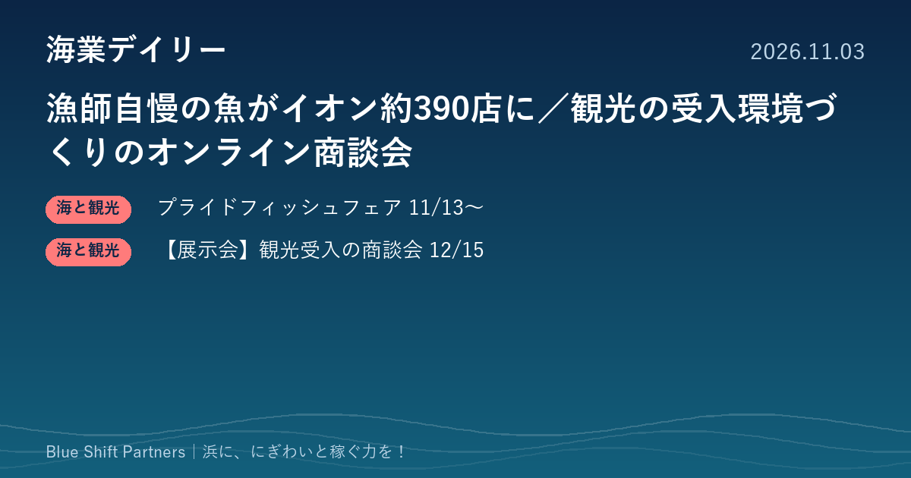

2026.11.03
漁師自慢の魚がイオン約390店に／観光の受入環境づくりのオンライン商談会

JF全漁連が、11月13日から3日間、イオン・イオンスタイルの約390店舗で「プライドフィッシュフェア」を開くと発表しました。観光庁のサイトでは、オーバーツーリズムの未然防止など観光の受入環境整備に役立つサービスを紹介するオンライン商談会（12月15日・無料）の参加者募集が始まっています。
JF全漁連、イオン約390店舗で「プライドフィッシュフェア」を11月13〜15日に開催
JF全漁連は11月2日、各地の漁師が自信をもって薦める魚「プライドフィッシュ」を集めたフェアを、11月13日（金）〜15日（日）の3日間、「イオン」「イオンスタイル」の約390店舗で開くと発表しました。石川県の新たなプライドフィッシュ「香箱ガニ」のほか、AI給餌機で育てた「AIみかんブリ」や、千葉県産の低未利用魚を使った商品などが並ぶとしています。プライドフィッシュの取り組みは2014年度に始まり、今年で13年目です。
ここがポイント：浜の魚を「漁師自慢」という物語ごと大手量販店の売り場に届ける仕組みです。千葉県産の低未利用魚の商品化も含まれており、値がつきにくい魚を加工や名付けで売り物に変える手がかりとして、漁協や水産加工の事業者にとって参考になります。
出典：JF全漁連（全国漁業協同組合連合会）プレスリリース「『プライドフィッシュフェア』をイオン、イオンスタイル約390店舗で開催」（2026-11-02）
【展示会】観光の受入環境整備のオンラインソリューション商談会（12月15日・無料）
観光庁のサイトで、オーバーツーリズムの未然防止をはじめとする受入環境整備に役立つサービスを企業が紹介し、参加者が気になる企業に相談・質問できるオンライン商談会の案内が掲載されています。開催は12月15日（火）10:00〜14:30（前半10:00〜11:30、後半13:00〜14:30。一部のみの参加も可）、Zoomで行い、参加費は無料です。対象は行政・DMO・観光関連事業者等で、参加は特設サイトの申込フォームから申し込みます。サービスを紹介する登壇企業の募集は11月13日（金）締切です。
ここがポイント：漁業体験や浜の食堂・直売所に人が集まり始めた地域では、駐車場の混雑、ごみ、地元との摩擦といった受入の課題が出てきます。自治体や観光協会、漁協が、受入環境を整えるためのサービスを移動なしで比べられる機会です。
出典：観光庁「【参加者・登壇者募集】オーバーツーリズムの未然防止をはじめとする受入環境整備に係るオンラインソリューション商談会」（2026-10-30）
浜の魚を売るときに効くのは、魚そのものに加えて「誰が、どんな思いで獲ったか」という物語です。プライドフィッシュのように名前と物語をつけると、量販店でも選ばれる理由になります。人を呼ぶ側の地域は、にぎわいが生まれる前から受入の段取りを考えておくと、地元の理解を得ながら長く稼げる形にしやすくなります。